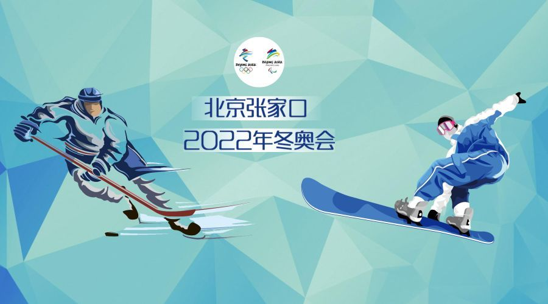
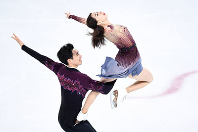

项目介绍
短道速滑
- 短道速滑（Short Track Speed Skating），全称短跑道速度滑冰，是在长度较短的跑道上进行的冰上竞速运动。
短道速滑起源于加拿大，当时加拿大的一些速度滑冰爱好者常到室内冰球场上练习，随之产生了室内速度滑冰的比赛。20世纪初，短道速滑逐渐在欧洲和美洲国家广泛开展。1975年，国际滑冰联盟成立短跑道速度滑冰技术委员会。1981年起，开始举办世界短道速滑锦标赛。1988年，短道速滑在卡尔加里冬季奥运会被首次列为冬季奥运会表演项目，1992年，阿尔贝维尔冬季奥运会将短道速滑列为正式比赛项目。
短道速滑由国际滑冰联盟管理，该组织于1892年在荷兰成立。国际滑联组织的短道速滑比赛主要有世界短道速滑锦标赛、世界短道速滑青年锦标赛等。
速度滑冰
- 速度滑冰（Speed Skating）是以冰刀为工具在冰上进行的一种冰上竞速运动。在国际体育分类学上属于滑冰运动。它是指在规定距离内以竞速为目的的滑冰比赛，简称速滑，是冬季奥运会的正式比赛项目。运动员脚着冰鞋在冰面上滑行，借助冰刀的刀刃切入冰面形成稳固的支撑点，通过两腿轮流蹬冰、收腿、下刀，滑进动作以及全身协调配合向前快速滑行。
速度滑冰是一项历史悠久的运动，早在十一二世纪，在荷兰、英国、瑞士以及斯堪的纳维亚一些国家的早期文献中就有关于将动物骨骼绑在脚上在冰上快速移动的记载，这是滑冰运动的早期雏形。从19世纪40年代开始，速度滑冰从英格兰和荷兰迅速传入其他国家，滑冰俱乐部也由此纷纷建立。19世纪70年代，一些国家建立全国性滑冰组织的要求开始产生。1879年，第一个全国性的滑冰领导机构—英国滑冰协会创立。1893年1月，在国际滑联的领导下，第一届世界男子速度滑冰锦标赛在阿姆斯特丹举行。男、女速度滑冰分别于1924年、1960年被列为冬奥会比赛项目。
速度滑冰最高级的组织机构国际滑冰联盟，1892年在荷兰成立。中国的最高级组织机构为中国滑冰协会，1980年在北京成立。

花样滑冰
- 花样滑冰（Figure Skating）是冰上运动项目之一。运动员通过冰刀在冰面上划出图形，并表演跳跃、旋转等高难度动作。花样滑冰的裁判会按照动作的质量与艺术性表现进行综合评分，最高为6分。
花样滑冰起源于18世纪的英国，后相继在德国、北美地区国家迅速开展。1892年，国际滑冰联盟在瑞士正式成立，并制定了该项目的比赛规则。1872年奥地利首次举办花样滑冰比赛。1882年，奥地利花样滑冰选手弗列依和他的妻子在维也纳冰场手拉手跳起了双人舞后，诞生了双人滑。1896年在俄国彼得堡举行首次世界男子单人花样滑冰锦标赛。1990年，亚洲滑冰联合会成立。
花样滑冰最高级的组织机构为国际滑冰联盟，1892年在荷兰成立。中国最高级的组织机构为中国花样滑冰协会，2018年1月18日在北京成立。